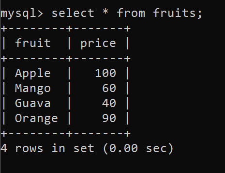

MySQL DML Commands
DML is an abbreviation of Data Manipulation Language. The DML commands in Structured Query Language change the data present in the SQL database. We can easily access, store, modify, update and delete the existing records from the database using DML commands.
Following are the four main DML commands in SQL:
- SELECT Command
- INSERT Command
- UPDATE Command
- DELETE Command
SELECT DML Command
The SELECT command shows the records of the specified table. It also shows the particular record of a particular column by using the WHERE clause.
To view all records in th table , syntax is :
select * from table_name;
To view records on a specific condition, syntax is :
SELECT column_Name_1, column_Name_2, ….., column_Name_N FROM Name_of_table;
For example :
INSERT DML Command
INSERT is another most important data manipulation command in Structured Query Language, which allows users to insert data in database tables.
Syntax of insert command
INSERT INTO TABLE_NAME ( column_Name1 , column_Name2 , column_Name3 , .... column_NameN ) VALUES (value_1, value_2, value_3, .... value_N ) ;
UPDATE DML Command
UPDATE is another most important data manipulation command in Structured Query Language, which allows users to update or modify the existing data in database tables.
Syntax of update command
UPDATE Table_name SET [column_name1= value_1, ….., column_nameN = value_N] WHERE CONDITION;
Delete DML Command
DELETE is a DML command which allows SQL users to remove single or multiple existing records from the database tables. This command of Data Manipulation Language does not delete the stored data permanently from the database. We use the WHERE clause with the DELETE command to select specific rows from the table.
DELETE FROM Table_Name WHERE condition;